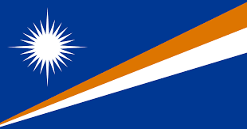
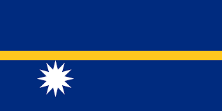

Day 4: Exploring Micronesia

Introduction to Micronesia
Micronesia is a group of small islands spread across the Pacific Ocean. These islands are known for their stunning beaches and rich marine life.
Big Cities
Some of the main cities in Micronesia are Palikir, Majuro, and Tarawa. These cities are small but have lots of interesting things to see.
Famous Places
Micronesia has famous places like the ancient city of Nan Madol, the diving spots in Chuuk Lagoon, and the Rock Islands of Palau.
Culture
People in Micronesia speak many languages. They celebrate traditional dances and enjoy foods like breadfruit and fish.
Heroes
Heroes from Micronesia include Bailey Olter from the Federated States of Micronesia, who was a famous leader, and Lazarus Salii from Palau, who helped his country gain independence.
Countries, Their Flags, and Capital Cities in Micronesia
| Country | Flag | Capital City |
|---|---|---|
| Federated States of Micronesia |  |
Palikir |
| Kiribati |  |
Tarawa |
| Marshall Islands |  | Majuro |
| Nauru |  | Yaren (de facto) |
| Palau |  |
Ngerulmud |
| Guam |  |
Hagåtña |
| Northern Mariana Islands |  |
Saipan |
Federated States of Micronesia


Kiribati


Marshall Islands

Nauru


Palau

Guam


Northern Mariana Islands


Did you know?
üå¥ The Federated States of Micronesia is made up of over 600 islands, each offering unique natural beauty.
üêü Kiribati is one of the most isolated countries in the world, and its atolls are spread over 3.5 million square kilometers of ocean.
üèùÔ∏è The Marshall Islands are home to the world's largest atoll, Kwajalein, which is part of the Republic of the Marshall Islands.
ü¶Ö Nauru is the third smallest country in the world by land area, with only 21 square kilometers.
üêö Palau's Rock Islands are a UNESCO World Heritage site, known for their incredible biodiversity.
üå∫ Guam is the largest and southernmost island in the Mariana Islands archipelago, known for its rich history and vibrant Chamorro culture.